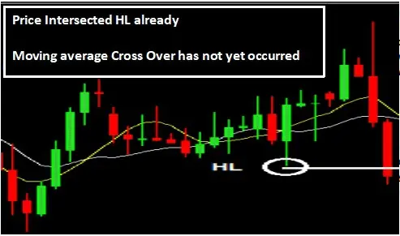
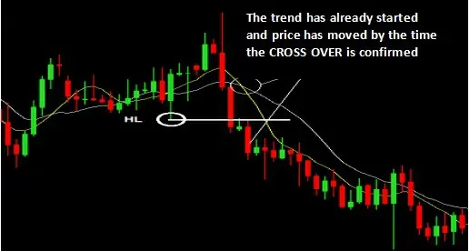
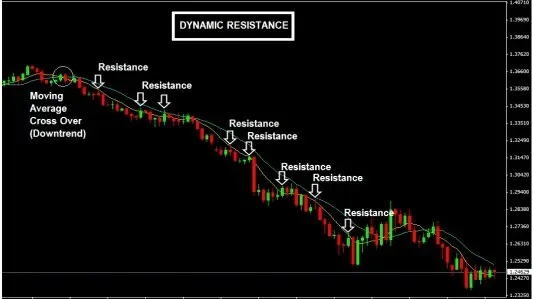
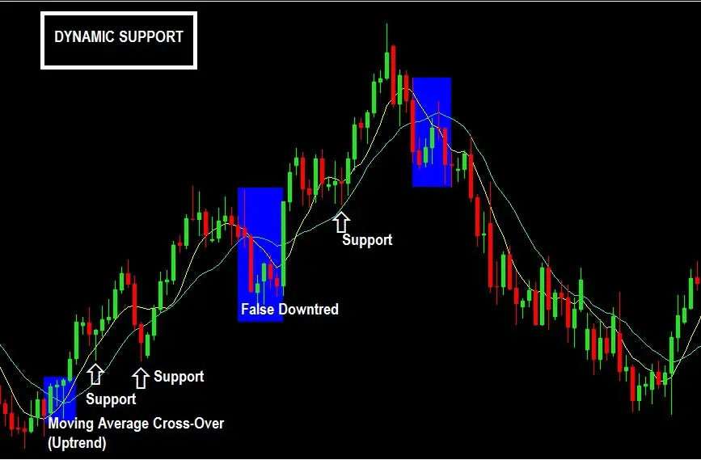
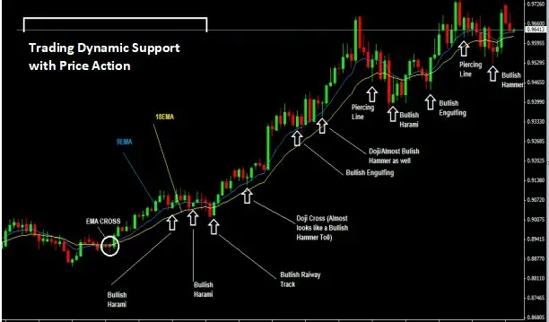
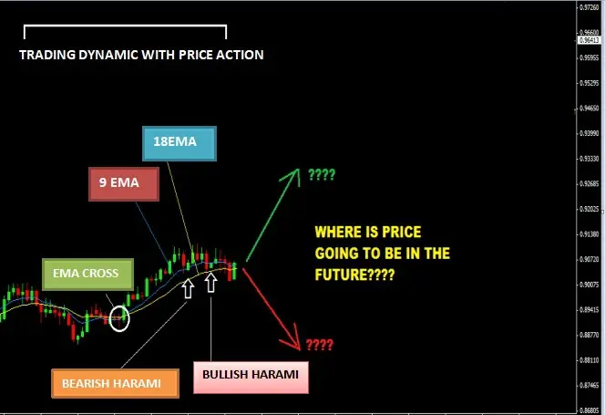
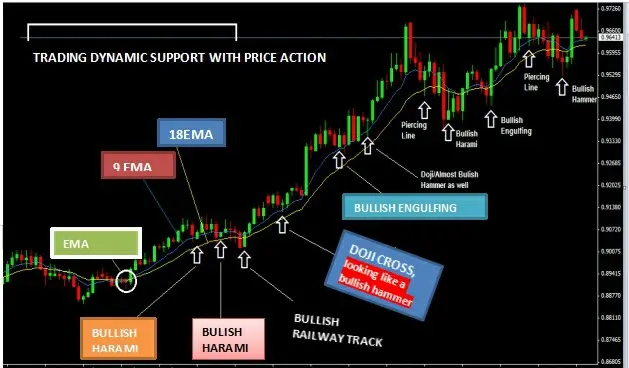
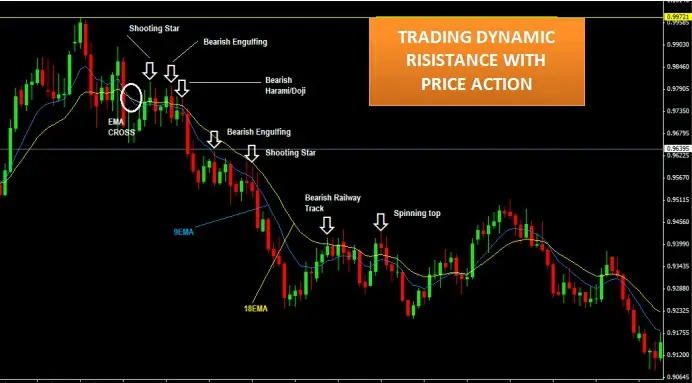

Trading Moving Averages with Price Action
Do you recall when I said something like not so pure price action trading. Well, we're starting now!
What I refer to as "Not-So-Pure Price Action Trading" is the usage of price action trading in conjunction with one
other indicator or a combination of indicators that are included in your trading system. (Call it anything you want; I
honestly don't care if you believe I'm incorrect.)
Many beginning traders rely on moving averages for trend detection or identification since they find it challenging
to describe the structure of a trending market.
Moving averages are only useful, in my opinion, for creating dynamic levels of support and resistance. I'll quickly
explain this idea. Moving averages are actually awful at anticipating trends since they only do it after the trend has
already begun and after the price has moved significantly.
Here's an illustration:

Observe how price has already crossed
the HL (higher low) in the chart above, signaling the beginning of the decline market (potentially).
However, take note that the moving averages still have not crossed.
Therefore, price action suggests that you may be in a decline right now, but moving average says "not yet."
As a result, you have two signals that disagree. And as this chart below illustrates, by the time the moving average
supports what the price action has suggested, the price has already moved significantly lower.

Which will you actually choose
then? Count on the moving average or the price action to inform you when a trend has changed?
Well I can not decide for you.
Dynamic Support and Resistance Levels Using Moving Averages
A couple of the charts provided below will help you completely understand the idea of dynamic support and
resistance.
Price swings up to the moving average lines (upswing) during a downtrend in the market, then bounces back down
from them (downswing). (If you include moving average lines on your charts, that is.)
Here's an illustration:

Similar events take place during
an uptrend when prices swing downward to the moving average lines before rebounding upward from them
(upswing).
Here is an illustration from the chart below:

The second thing you need to know is that trend trading methods can be built around dynamic support and resistance
utilizing moving averages, and in a great trending market, they are highly effective.
If you're a fan of moving averages, you may utilize reversal candlesticks as your confirmation signal to buy or
sell when the price begins to retrace and touch the moving average lines.
● When a trend is down, you should search for bearish reversal candlesticks to enter short (sell) positions, such as
the shooting star, bearish harami, spinning tops, dark cloud cover, and hanging man.
● You should watch out for bullish reversal candlestick patterns like as pin bars, dojis, piercing line, bullish harami,
etc. when there is an uptrend.
Going back to time once more. An illustration of trading dynamic support using price action is seen in the chart
below:

Now that you can see how the market has operated in the past, it is simple to say things like, "You could have
bought here and sold here," etc. based on what happened in the past.
But the major problem for most traders is that when a setup appears, they will almost certainly doubt it because it
will appear as follows:

And the outcome was as follows:

Here is an illustration of a trade using price action and dynamic resistance levels.
